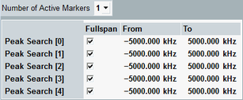

The FFT spectrum analyzer provides some softkey/hotkey combinations which have no equivalent in the configuration dialog. Most of these hotkeys provide display configurations (like diagram scaling). They are self-explanatory and do not have any remote control commands assigned.
The following hotkeys provide additional features.
Specify whether the time diagrams show the influence of the Gaussian window. The frequency-domain results are always calculated from windowed time domain data.
Remote command:n/a
Defines five areas where the R&S CMW searches for peaks of the spectrum trace. A marker is assigned to the first n areas to read the power and frequency values. <n> is specified via the parameter "Number of Active Markers". You can locate several peaks in frequency ranges where several areas overlap.
The peak search is particularly suited for exact frequency measurements of narrow-band (CW) signals in the spectrum.

If "Full Span" is selected, the specified frequency range is ignored. The R&S CMW searches the peak power in the whole frequency span.
Remote command: